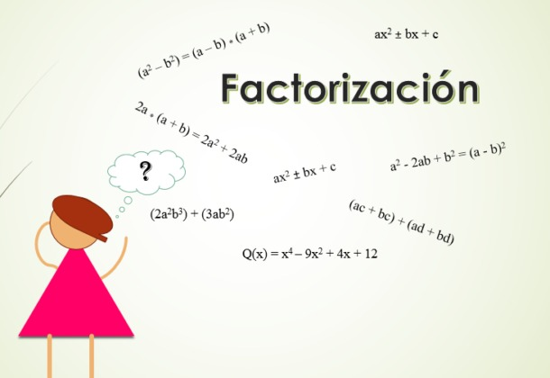

Factorización.
Introducción
A continuación hablaremos sobre la factorización, un concepto fundamental en matemáticas que nos permite descomponer un número o una expresión algebraica en el producto de sus factores.
También veremos cómo los factores son números o expresiones que, al multiplicarse entre sí, dan como resultado el número o la expresión original.
Por ejemplo, el número 12 se puede factorizar en sus factores primos:
12 = 2 × 2 × 3.
De manera similar, en álgebra, una expresión puede ser factorizada para facilitar su análisis y resolución.
También pondremos en práctica tus conocimientos a través de una evaluación sobre el tema.
Esperamos que este sitio web te sea de gran ayuda para aprender más sobre la factorización y que disfrutes tu experiencia explorando nuestros contenidos.

Página web creada por Gabriela Alejandra Molina Luna y Keren Patricia Hernández Diaz, alumnas de primer año técnico en Desarrolo de Software, Sección "A"
¡Somos Cefram, somos familia!
Ir arriba